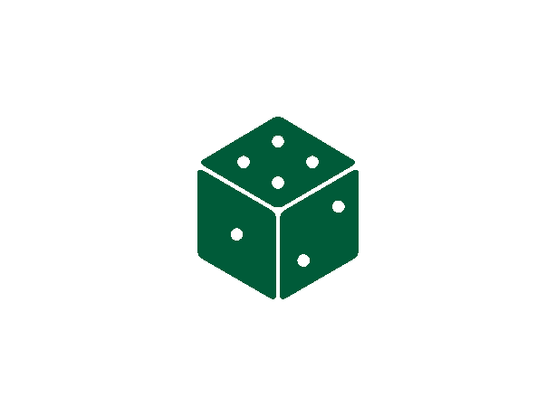

<div class="qwixx-wasted-explanation-row">
    <div class="qwixx-wasted-die-img-container">
        
    </div>
    <div class="qwixx-wasted-points">= -5</div>
</div>
<div class="qwixx-wasted-row" ng-controller="qwixxWastedController">
    <qwixx-wasted waste="waste1"></qwixx-wasted>
    <qwixx-wasted waste="waste2"></qwixx-wasted>
    <qwixx-wasted waste="waste3"></qwixx-wasted>
    <qwixx-wasted waste="waste4"></qwixx-wasted>
</div>